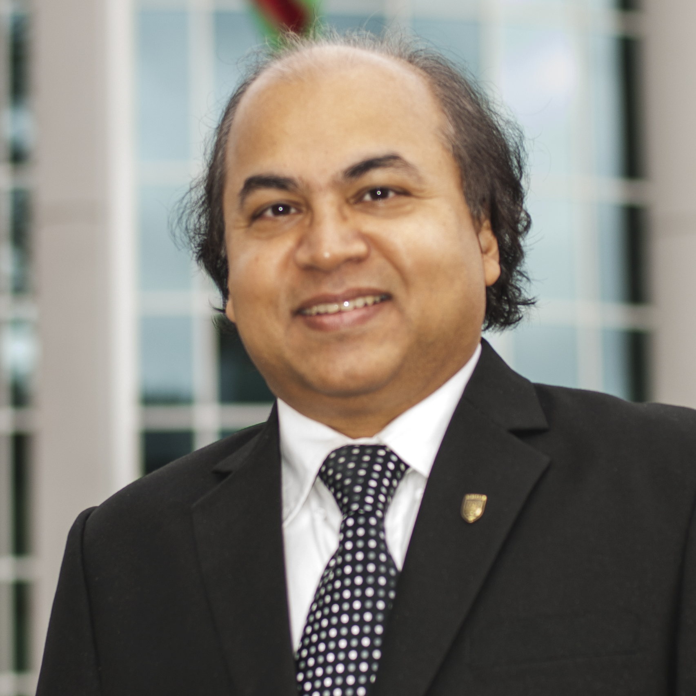
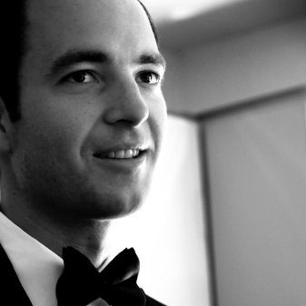
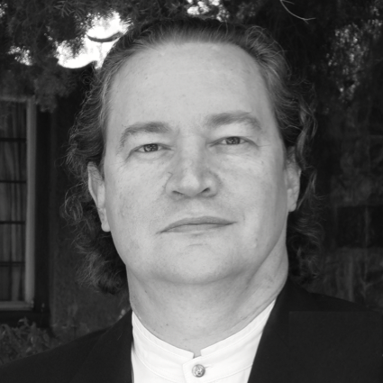

Speakers


Dr. Hasnat Dewan is an award-winning scholar with more than 20 years of experience teaching Economics at universities in the USA, Canada, China, and Bangladesh. Currently, he is Chair of Economics at Thompson Rivers University (TRU). Previously, he served as the Coordinator of International Programs for the School of Business and Economics at TRU. Dr. Dewan previously worked as a partner/researcher in three economic consulting firms. He earned his MA in International & Development Economics from Yale University and a Ph.D. in Economics from the University of Texas at Austin.
Dr. Dewan was the earliest supporter of this endeavor and only deserving of the Opening Keynote. We are honoured to have him.
Dr. Dewan was the earliest supporter of this endeavor and only deserving of the Opening Keynote. We are honoured to have him.
Trevor Paul is a Manager with the British Columbia Ministry of International Trade. He was BC’s representative during the TPP negotiations and can speak to the potential economic impacts the agreement could have for province as well as the opportunities it will provide BC businesses. He represents the Ministry at the event.
Trevor has a wide and varied experience in the international field, conducting research and implementing projects. He's worked in foreign affairs too with the Embassy of Canada to Peru and Bolivia, where he was Trade Commissioner for a while. His time in the South Americas is a great asset. His topic is "TPP: Challenges and Opportunities for BC." An abstract follows.
"Representing a market with over 800 million people and a combined GDP of roughly $28 trillion, the TPP is an historic trade agreement for Canada. The TPP will ensure that BC businesses can compete on an equal footing with any other business in the 12-country membership of the free trade area. It will give BC’s exporters of goods and services new and improved access to key Pacific Rim markets, spur spin-off economic growth and job creation here at home and it represents an opportunity for BC to position itself as an economic gateway between Asia and the Americas. Join me as I highlight the importance of this Agreement for BC, its potential economic impacts for the Province and the potential benefits it could bring for BC exporters of goods and services by key sectors and markets."
Trevor has a wide and varied experience in the international field, conducting research and implementing projects. He's worked in foreign affairs too with the Embassy of Canada to Peru and Bolivia, where he was Trade Commissioner for a while. His time in the South Americas is a great asset. His topic is "TPP: Challenges and Opportunities for BC." An abstract follows.
"Representing a market with over 800 million people and a combined GDP of roughly $28 trillion, the TPP is an historic trade agreement for Canada. The TPP will ensure that BC businesses can compete on an equal footing with any other business in the 12-country membership of the free trade area. It will give BC’s exporters of goods and services new and improved access to key Pacific Rim markets, spur spin-off economic growth and job creation here at home and it represents an opportunity for BC to position itself as an economic gateway between Asia and the Americas. Join me as I highlight the importance of this Agreement for BC, its potential economic impacts for the Province and the potential benefits it could bring for BC exporters of goods and services by key sectors and markets."
A partner of Hogan Lovells (Washington DC), Chandri Navarro provides strategic advice on international trade and customs law matters, and foreign trade regulations to firms, associations and governments both in the USA and outside. She advises clients on trade and customs matters, including tariff classification, country of origin determinations and marking requirements, labeling rules, tariff preference programs, free trade agreements, compliance, and documentation for imports into the United States and other countries. Chandri also provides legislative advice and lobbying assistance on trade and customs matters. Chandri has been involved in the negotiation, drafting, lobbying, and implementation for every trade preference program and Free Trade Agreement put in place in the last 20 years, including NAFTA, CAFTA-DR, U.S.-Colombia FTA, U.S.-Peru FTA, U.S.-Chile FTA, U.S.-Australia FTA, the Caribbean Basin Trade Partnership Act (CBTPA), the African Growth and Opportunity Act (AGOA), the Andean Trade Preference Act (ATPA), and the Andean Trade Preference and Drug Eradication Act (ATPDEA).
Her topic for the day will pool together a great wealth of experience as she presents: "Navigating TPP
Technicalities – Rules of Origin, Tariffs, Customs and Records".
Her topic for the day will pool together a great wealth of experience as she presents: "Navigating TPP
Technicalities – Rules of Origin, Tariffs, Customs and Records".
Beth Trent is Senior Vice President of International Institute of Conflict Prevention and Resolution (New York). She spent the first 11 years of her career as a litigator at Cravath, Swaine & Moore, where her work was largely focused on complex multijurisdictional matters. She was litigation counsel at both GE Capital and Schering-Plough, where she pioneered early case assessment and ran complex litigation. In her roles at both companies, Beth led teams that used Alternate Dispute Resolution strategies to resolve complex disputes with federal and state entities, including the Department of Justice, Federal Trade Commission and the Attorney’s General of all fifty states. Beth was also a risk manager and compliance director at PricewaterhouseCoopers and a legal and compliance consultant to a privately owned technology and investment company.
Beth leads us into the world of International Dispute Resolution, with "Prevention and
Resolution of Dispute in International Trade"
Beth leads us into the world of International Dispute Resolution, with "Prevention and
Resolution of Dispute in International Trade"
Dr. Anowar Zahid is the Director of Vancouver International Trade Institute. He is also Head of the International Trade and Development unit for the Center of International Trade and Siyar (CILAS) and a faculty in Law at Universiti Kebangsaan Malaysia (UKM - National University of Malaysia). He received his PhD from the University of Manchester, LLM from Dalhousie University, LLB (Honours) and LLM degrees from the University of Dhaka. He also obtained a Certificate in International Alternative Dispute Resolution from the Institute of International Commercial Law, Pace University, New York.
Investor-State Dispute Settlement (ISDS) has been a highly controversial point in the TPPA. Is it privatization of justice. Dr. Zahid shares great insight and perspective in "Investor Protection and State Regulation."

Investor-State Dispute Settlement (ISDS) has been a highly controversial point in the TPPA. Is it privatization of justice. Dr. Zahid shares great insight and perspective in "Investor Protection and State Regulation."
Mylan Savjord is Project Consultant with Canadian Manufacturers and Exporters (CME) BC. He is an international business professional focused on public relations and community engagement. His primary focus lies in the intersection of interests between communities, private industry, and governments, revolving around Corporate Social Responsibility. Mylan has worked with government and industry and has experience in China, the ASEAN and a stint in Mexico with Foreign Affairs too.
As a UBC alumnus, and with much to share, Mylan will deliver a spotlight keynote on "Society and Culture: International Responsibility"

As a UBC alumnus, and with much to share, Mylan will deliver a spotlight keynote on "Society and Culture: International Responsibility"
Manie Eagar is the CEO of IDAEON | DIGIFIN – The Future of Money – an initiative to advance digital identity and finance, and distributed ledger (blockchain) technology innovation, transparency and inclusion. Manie is an experienced global investment, mergers and acquisitions executive with over 30 years of experience driving new wealth creation, business growth and strategic innovation. He brings international experience and deep skills in the startup, investment management and venture capital space. Manie contributed to the first crowdsourced Fintech Book publication on global Fintech trends: Fintech + Digital Currency — Convergence or Collision? He addressed the Canadian Senate Trade and Banking Commission in 2015 and a number of his proposals for a sound regulatory environment to promote digital currency and blockchain technology innovation were substantially incorporated in the Committee’s final report recommendations: Digital Currency – You Can’t Flip This Coin!
Manie and MaRi will together present "New Finance in International Trade: Facilitation, Implications, and Regulation."
Manie and MaRi will together present "New Finance in International Trade: Facilitation, Implications, and Regulation."
MaRi Eagar is Management Consultant at IDAEON | DIGIFIN. She is an early adopter and advocate for Bitcoin, Ethereum, blockchain and cryptocurrency technologies. While engaged at Deloitte Vancouver she instigated the investigation into Bitcoin and its blockchain applications, which has emerged as Deloitte’s Rubix blockchain technology initiative. She is passionate about advancing the role of women in the digital economy. MaRi has fulfilled a number of leadership roles implementing innovations in financial services organizations, e.g. treasury, stock exchange, retail banking, investment, insurance and development finance. She is a seasoned multi-disciplinary management consultant and implementation expert with more than 20 years proven track record working with executive and senior leaders in strategic design, execution and managing transition and change. MaRi was the architect for a collaborative software platform openaxyz deployed by Barclays and a number of other enterprises internationally which earned a nomination as a MaRs/RIC Innovator Idol in Ontario in 2012.
MaRi and Manie will jointly present "New Finance in International Trade: Facilitation, Implications, and Regulation"
MaRi and Manie will jointly present "New Finance in International Trade: Facilitation, Implications, and Regulation"